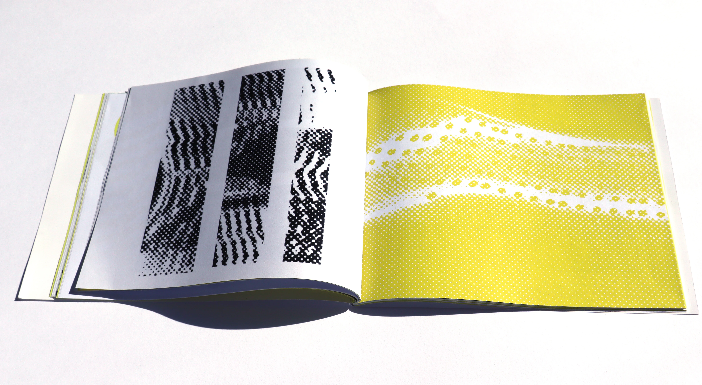
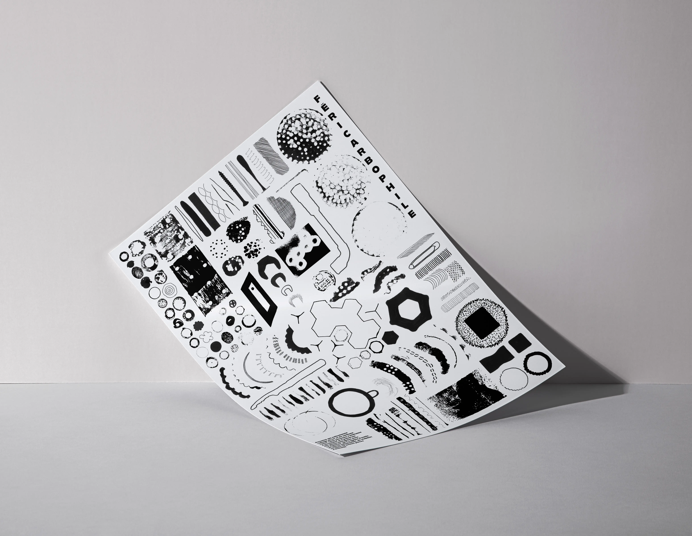
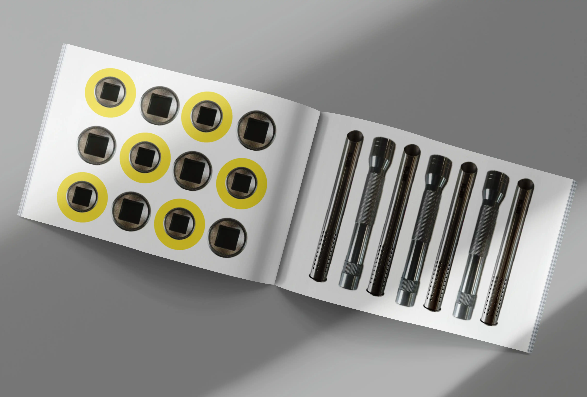
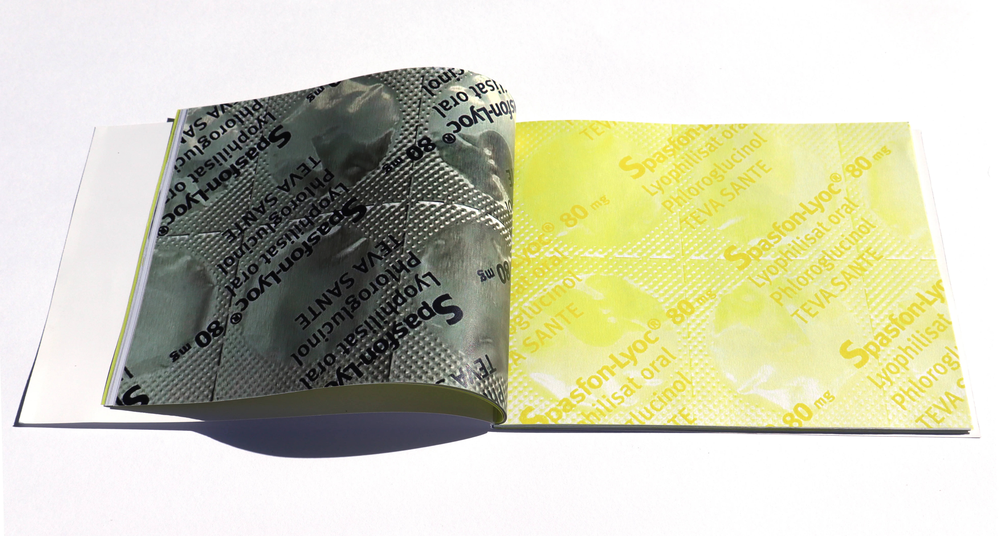

Collectionneur
Féricarbophile





À partir d’une collection d’objets en acier, une édition retrace la recherche visuelle menée autour de ces objets, de leur forme brute à leur interprétation graphique. Tandis que l’affiche rassemble l’ensemble des pièces récoltées, minutieusement organisées. Le but est simple révéler l’esthétique insoupçonnée de l’acier à travers une collection inattendue.